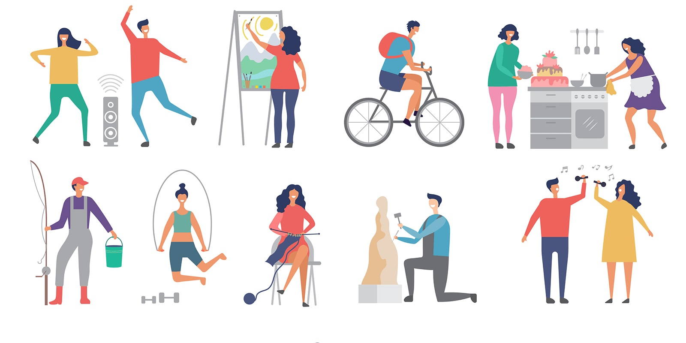
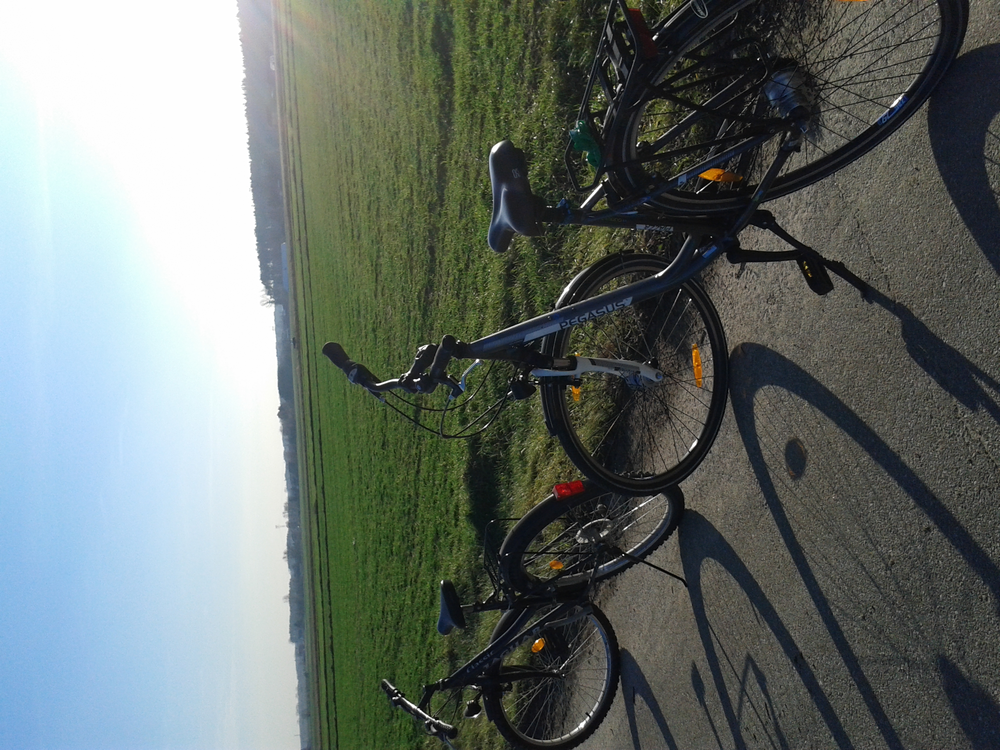
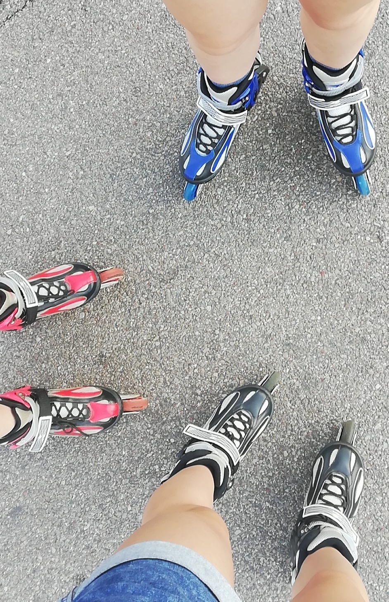
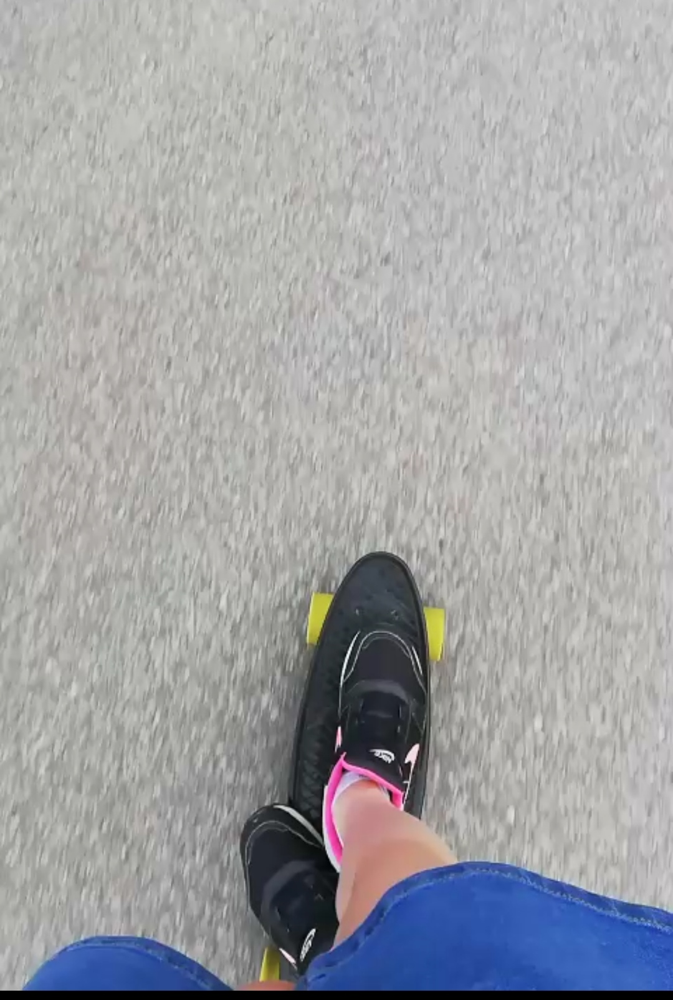
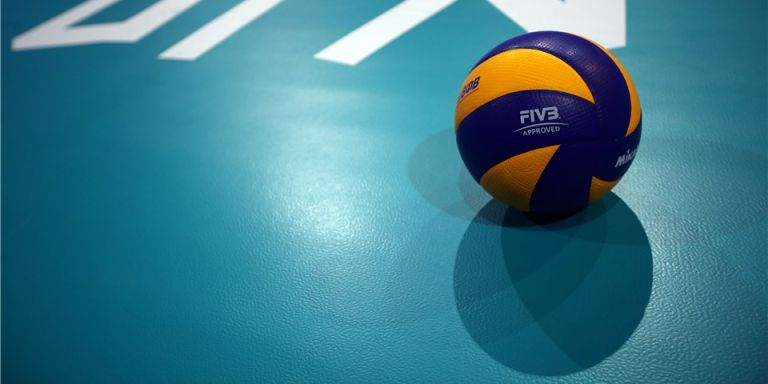
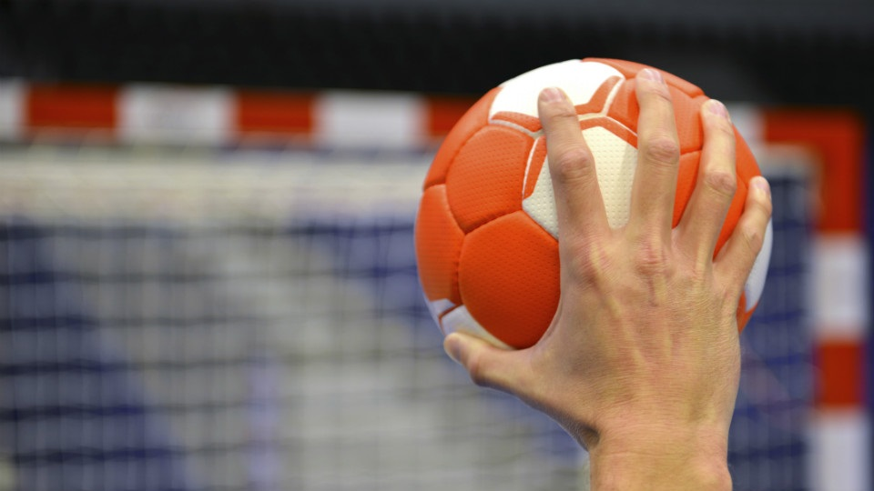
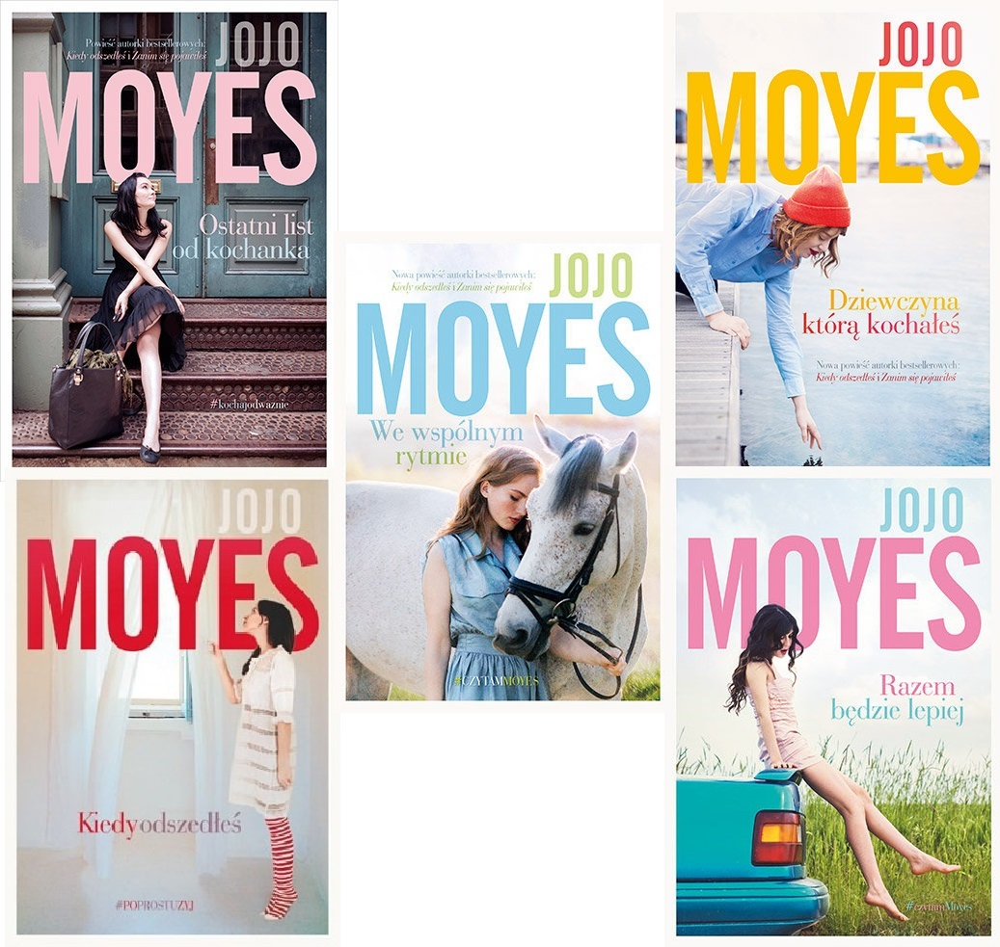
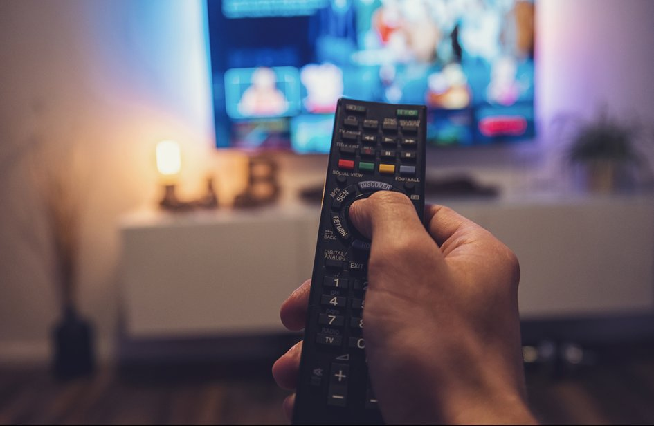

W tym miejscu chciałabym podzielić się moimi zainteresowaniami.
Moje hobby to między innymi:
- Uprawianie sportu
- Czytanie książek
- Oglądanie filmów
- Kontakt ze zwierzętami
Uprawianie sportu sprawia mi ogromną przyjemność, a najbardziej:
|  | Jazda na rowerze Jest to przede wszystkim ogromna przyjemność, ale dzięki tej aktywności dbam także o swoje zdrowie i wzmacniam mięśnie. |
Sport ten ma wiele korzyści, takie jak między innymi:
- Poprawa wydolności - ruch i aktywność fizyczna może w znacznym stopniu ograniczyć spadek naszego pułapu tlenowego. I tak trenujące osoby, prowadzące aktywny tryb życia zostaną aktywne, samowystarczalne i niezależne fizycznie nawet do 90tki i dłużej. Zatem jazda rowerem przyczynia się do poprawy wydolności naszego organizmu.
- Ograniczenie ryzyka chorób układu krążenia - u osób nawet amatorsko uprawiających sport, czyli np. jeżdżących rekreacyjnie czy komunikacyjnie rowerem, zwiększa się objętość serca oraz jego pojemność minutowa. Wpływa to pozytywnie na profilaktykę chorób układu krążenia, obniża ryzyko zachorowania na miażdżycę, zawały i udary. Wytrenowany mięsień sercowy, zmuszany do intensywnej pracy podczas wysiłku, w czasie spoczynku zmniejsza częstotliwość swoich skurczów.
- Wzmocnienie mięśni - jazda rowerem poprawia wytrzymałość, moc i szybkość mięśni kończyn dolnych, pośladków i wymusza także napięcie mięśni pleców, przedramion czy brzucha, którego mięśnie mają wpływ na stabilizację ciała rowerzysty. Przydaje się także jako rehabilitacja kończyn dolnych, przy problemach ze stawami kolanowymi.
- Redukcja wagi - jazda na rowerze w połączeniu z odpowiednią dietą może przyczynić się do zredukowania masy tłuszczowej.
- Ekologia - jeżdżąc rowerem można dbać o środowisko naturalne, nie zużywmy przy tym paliw kopalnych, nie zatruwamy powietrza, nie zużywamy istniejącej infrastruktury drogowej. Wybierając rower można być bardziej natyralnym i dbać o środowisko, które będzie służyć przyszłym pokoleniom.
|  | Jazda na rolkach i deskorolce W wolnym czasie lubię wyjść na świeże powietrze i spędzić czas jeżdżąć na rolkach lub deskorolce. Lubię robić to wspólnie ze znajomymi, ponieważ wtedy miło spędza się czas.  |
|  | Gra w siatkówkę Sport ten sprawiał mi przyjemność zawsze podczas zajęć wychowania fizycznego w szkołach. sport drużynowy, w którym biorą udział dwa zespoły po 6 zawodników w każdym (rozgrywający, atakujący, dwóch środkowych i dwóch przyjmujących, libero). Na boisku przebywa jednak tylko sześciu zawodników, libero zmienia się ze środkowym będącym w linii obrony, gdy drużyna przyjmuje zagrywkę. |
|  | Gra w piłkę ręczną Zespołowa dyscyplina sportu (gra drużynowa), uprawiana na całym świecie – zarówno przez kobiety, jak i przez mężczyzn – w której biorą udział dwie ekipy po 7 zawodników każda. Celem gry jest zdobycie jak największej liczby bramek. Piłka może być rzucana, popychana, łapana, uderzana i zatrzymywana. Zawodnicy, oprócz bramkarzy, nie mają prawa zrobić więcej niż 3 kroki z piłką w rękach, co wymusza bieg z kozłowaniem i liczne podania. Bramkarze wychodząc z pola bramkowego, stają się zawodnikami ofensywnymi i obowiązują ich wówczas identyczne prawa jak pozostałych zawodników (łącznie z brakiem możliwości powrotu z piłką w pole karne). |
Czytanie książek i oglądanie filmów
Są to czynności, które chętnie wykonuję w wolnym czasie. Nie mam ulubionego rodzaju ani książek, ani filmów.|  | Jej najbardziej znane książki to między innymi: -"Zanim się pojawiłeś" -"Kiedy odszedłeś" -"Dziewczyna, którą kochałeś" -"Srebrna zatoka" |
Ulubionego gatunku filmów także nie posiadam, oglądam wszystko, na co mam aktualnie ochotę.
Uważam, że w każdej wolnej chwili, wieczorami lub na nudę dobry jest film. Oglądanie filmów sprawia mi radość i dzięki niektórym filmom mogę mieć wskazówki na przyszłość.
